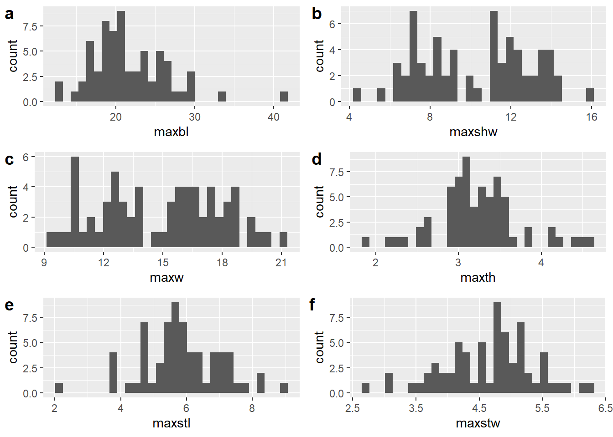
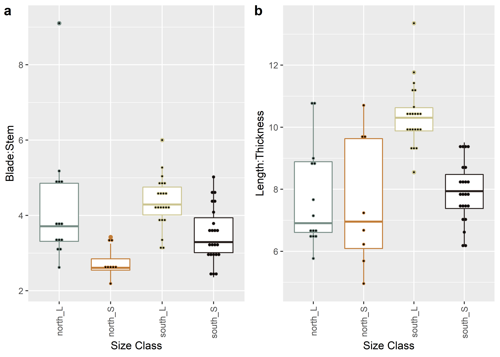

Chapter 2 Linear metrics
Two size classes (large/small) were used to examine whether the shape of Perdiz arrow points from the northern and southern behavioural regions of the ancestral Caddo region remain morphologically stable, or express morphological variation. Variability in Perdiz arrow point shape potentially provides evidence associated with differential resharpening trajectories.
The maximum blade length variable used in this study is calculated as the difference between maximum length and maximum stem length. For that reason, it differs from traditional measures of maximum blade length, which often overlaps with maximum stem length if measuring Perdiz arrow points with calipers.
Similarly, maximum shoulder length is calculated as the difference between maximum width and maximum shoulder width. Thus, while derivative of two linear measures, it does not account for the curvature that occurs in the range of that linear measurement. Similarly, it does not account for asymmetry on either side of the projectile.
# load analysis libraries
library(here)
library(tidyverse)## -- Attaching packages ------------------------------------------------------- tidyverse 1.3.1.9000 --## v tibble 3.1.6 v purrr 0.3.4
## v tidyr 1.2.0 v stringr 1.4.0
## v readr 2.1.2 v forcats 0.5.1## -- Conflicts --------------------------------------------------------------- tidyverse_conflicts() --
## x tidyr::expand() masks Matrix::expand()
## x dplyr::filter() masks stats::filter()
## x dplyr::lag() masks stats::lag()
## x tidyr::pack() masks Matrix::pack()
## x tidyr::unpack() masks Matrix::unpack()library(EnvStats)##
## Attaching package: 'EnvStats'## The following object is masked from 'package:Matrix':
##
## print## The following objects are masked from 'package:stats':
##
## predict, predict.lm## The following object is masked from 'package:base':
##
## print.defaultlibrary(ggpubr)
library(ggfortify)
library(cluster)
library(ggExtra)
library(RRPP)
library(wesanderson)
# load data
perdiz.linear <- read.csv("qdata.perdiz.csv",
header = TRUE,
as.is = TRUE)2.1 Derived variables
# add vars to data
# maximum blade length (derived)
perdiz.linear$maxbl <- perdiz.linear$maxl - perdiz.linear$maxstl
# maximum shoulder width (derived)
perdiz.linear$maxshw <- perdiz.linear$maxw - perdiz.linear$maxstw
## histograms
h.maxbl <- ggplot(perdiz.linear, aes(maxbl)) +
geom_histogram()
h.maxshw <- ggplot(perdiz.linear, aes(maxshw)) +
geom_histogram()
h.maxw <- ggplot(perdiz.linear, aes(maxw)) +
geom_histogram()
h.maxth <- ggplot(perdiz.linear, aes(maxth)) +
geom_histogram()
h.maxstl <- ggplot(perdiz.linear, aes(maxstl)) +
geom_histogram()
h.maxstw <- ggplot(perdiz.linear, aes(maxstw)) +
geom_histogram()
# render figure
figure.histograms <- ggarrange(h.maxbl, h.maxshw, h.maxw, h.maxth, h.maxstl, h.maxstw,
labels = c("a", "b", "c", "d", "e", "f"),
ncol = 2, nrow = 3)## `stat_bin()` using `bins = 30`. Pick better value with `binwidth`.
## `stat_bin()` using `bins = 30`. Pick better value with `binwidth`.
## `stat_bin()` using `bins = 30`. Pick better value with `binwidth`.
## `stat_bin()` using `bins = 30`. Pick better value with `binwidth`.
## `stat_bin()` using `bins = 30`. Pick better value with `binwidth`.
## `stat_bin()` using `bins = 30`. Pick better value with `binwidth`.## plot figure
figure.histograms
2.2 Assign size classes
2.2.1 Northern behavioural region
# subset nbr dataset
nbr <- subset(perdiz.linear,
region == "north",
select = spec:maxshw)
# calculate mean blade length
meanbl <- mean(nbr$maxbl)
# assign L/S varieties
ls.check1 <- nbr$maxbl >= meanbl
ls.check2 <- nbr$maxbl >= 0 & nbr$maxbl < meanbl
nbr$size <- ""
nbr$size <- ifelse(ls.check1, "L", nbr$size)
nbr$size <- ifelse(ls.check2, "S", nbr$size)2.2.2 Southern behavioural region
# subset sbr dataset
sbr <- subset(perdiz.linear,
region == "south",
select = spec:maxshw)
# calculate mean blade length
meanbl <- mean(sbr$maxbl)
# assign L/S varieties based on mean blade length
ls.check1 <- sbr$maxbl >= meanbl
ls.check2 <- sbr$maxbl >= 0 & sbr$maxbl < meanbl
sbr$size <- ""
sbr$size <- ifelse(ls.check1, "L", sbr$size)
sbr$size <- ifelse(ls.check2, "S", sbr$size)2.3 Shape variables
The morphological form (shape + size) of the Perdiz arrow points was split into shape (representing proportions between dimensions in an object) and size (sensu Klingenberg (2016)). Size and shape were calculated using the method of log-shape ratios proposed by Mosimann (1970), where the geometric mean is considered a proxy for size, and shape was calculated as the log of isometric size subtracted from the log of each linear/dimensional measure.
# vars used to calculate geometric mean
mx.maxbl <- mx$maxbl
mx.maxw <- mx$maxw
mx.maxshw <- mx$maxshw
mx.maxth <- mx$maxth
mx.maxstl <- mx$maxstl
mx.maxstw <- mx$maxstw
mean <- c(mx.maxbl, mx.maxw, mx.maxshw, mx.maxth, mx.maxstl, mx.maxstw)
# calculate geometric mean
mx$geo.mean <- geoMean(mean)
geo.mean <- mx$geo.mean
# log of linear vars subtracted from log of geometric mean to isolate shape
mx$sh.maxbl <- log(mx.maxbl) - log(geo.mean)
mx$sh.maxw <- log(mx.maxw) - log(geo.mean)
mx$sh.maxshw <- log(mx.maxshw) - log(geo.mean)
mx$sh.maxth <- log(mx.maxth) - log(geo.mean)
mx$sh.maxstl <- log(mx.maxstl) - log(geo.mean)
mx$sh.maxstw <- log(mx.maxstw) - log(geo.mean)
# join river region and size class
mx <- mx %>%
unite("merged", region, size, remove = FALSE)
# export table for use in gm analysis
write.csv(mx, "qdata.morph.csv", row.names = FALSE)2.4 Ratios
# calculate ratios
# blade:stem (linear vars)
mx$perdiz.blade.stem2 <- mx$maxbl / mx$maxstl
# length:thickness
# calculate sh.maxl var
mx.maxl <- mx$maxl
mx$sh.maxl <- log(mx.maxl) - log(geo.mean)
# length:thickness (linear vars)
mx$perdiz.length.thickness2 <- mx$maxl / mx$maxth
# palette
pal <- wes_palette("Moonrise2", 4, type = "continuous")
# boxplot blade:stem
bl.st <- ggplot(mx, aes(x = merged, y = perdiz.blade.stem2, color = merged)) +
geom_boxplot() +
geom_dotplot(binaxis = 'y',stackdir = 'center', dotsize = 0.3) +
scale_colour_manual(values = pal) +
theme(legend.position = "none") +
theme(axis.text.x = element_text(angle = 90, vjust = 0.5, hjust=1)) +
labs(x = 'Size Class', y = 'Blade:Stem')
# boxplot length:thickness
lth <- ggplot(mx, aes(x = merged, y = perdiz.length.thickness2, color = merged)) +
geom_boxplot() +
geom_dotplot(binaxis = 'y',stackdir = 'center', dotsize = 0.3) +
scale_colour_manual(values = pal) +
theme(legend.position = "none") +
theme(axis.text.x = element_text(angle = 90, vjust = 0.5, hjust=1)) +
labs(x = 'Size Class', y = 'Length:Thickness')
# render figure
figure.ratios <- ggarrange(bl.st, lth,
labels = c("a", "b"),
ncol = 2, nrow = 1)## Bin width defaults to 1/30 of the range of the data. Pick better value with `binwidth`.
## Bin width defaults to 1/30 of the range of the data. Pick better value with `binwidth`.## plot figure
figure.ratios
2.5 Boxplots for Size Class
Boxplots are used here to identify whether shape changes in similar ways between size classes.
Three attributes (maximum blade length, shoulder width, and width) are associated with blade shape, two attributes (maximum stem length and stem width) articulate with base shape, and one attribute (maximum thickness) remains neutral as the thickest part of each projectile was inconsistent across blade and base designations.
# boxplot of maximum blade length
maxbl <- ggplot(mx, aes(x = merged, y = sh.maxbl, color = merged)) +
geom_boxplot() +
geom_dotplot(binaxis = 'y',stackdir = 'center', dotsize = 0.3) +
scale_colour_manual(values = pal) +
theme(legend.position = "none") +
theme(axis.text.x = element_text(angle = 90, vjust = 0.5, hjust=1)) +
labs(x = 'Size Class', y = 'MaxBL')
# boxplot of maximum shoulder width
maxshw <- ggplot(mx, aes(x = merged, y = sh.maxshw, color = merged)) +
geom_boxplot() +
geom_dotplot(binaxis = 'y',stackdir = 'center', dotsize = 0.3) +
scale_colour_manual(values = pal) +
theme(legend.position = "none") +
theme(axis.text.x = element_text(angle = 90, vjust = 0.5, hjust=1)) +
labs(x = 'Size Class', y = 'MaxShW')
# boxplot of maximum width
maxw <- ggplot(mx, aes(x = merged, y = sh.maxw, color = merged)) +
geom_boxplot() +
geom_dotplot(binaxis = 'y',stackdir = 'center', dotsize = 0.3) +
scale_colour_manual(values = pal) +
theme(legend.position = "none") +
theme(axis.text.x = element_text(angle = 90, vjust = 0.5, hjust=1)) +
labs(x = 'Size Class', y = 'MaxW')
# boxplot of maximum thickness
maxth <- ggplot(mx, aes(x = merged, y = sh.maxth, color = merged)) +
geom_boxplot() +
geom_dotplot(binaxis = 'y',stackdir = 'center', dotsize = 0.3) +
scale_colour_manual(values = pal) +
theme(legend.position = "none") +
theme(axis.text.x = element_text(angle = 90, vjust = 0.5, hjust=1)) +
labs(x = 'Size Class', y = 'MaxTh')
# boxplot of maximum stem length
maxstl <- ggplot(mx, aes(x = merged, y = sh.maxstl, color = merged)) +
geom_boxplot() +
geom_dotplot(binaxis = 'y',stackdir = 'center', dotsize = 0.3) +
scale_colour_manual(values = pal) +
theme(legend.position = "none") +
theme(axis.text.x = element_text(angle = 90, vjust = 0.5, hjust=1)) +
labs(x = 'Size Class', y = 'MaxStL')
# boxplot of stem width
maxstw <- ggplot(mx, aes(x = merged, y = sh.maxstw, color = merged)) +
geom_boxplot() +
geom_dotplot(binaxis = 'y',stackdir = 'center', dotsize = 0.3) +
scale_colour_manual(values = pal) +
theme(legend.position = "none") +
theme(axis.text.x = element_text(angle = 90, vjust = 0.5, hjust=1)) +
labs(x = 'Size Class', y = 'MaxStW')
# render figure
figure <- ggarrange(maxbl, maxshw, maxw, maxth, maxstl, maxstw,
labels = c("a", "b", "c", "d", "e", "f"),
ncol = 3, nrow = 2)## Bin width defaults to 1/30 of the range of the data. Pick better value with `binwidth`.
## Bin width defaults to 1/30 of the range of the data. Pick better value with `binwidth`.
## Bin width defaults to 1/30 of the range of the data. Pick better value with `binwidth`.
## Bin width defaults to 1/30 of the range of the data. Pick better value with `binwidth`.
## Bin width defaults to 1/30 of the range of the data. Pick better value with `binwidth`.
## Bin width defaults to 1/30 of the range of the data. Pick better value with `binwidth`.## plot figure
figureFigure 2.1: Boxplots for shape variables associated with a, maximum length; b, width; c, thickness; d, stem length; and e, stem width for Perdiz arrow points from the northern and southern behavioural regions.
2.6 Principal Components Analysis
#pca
df <- mx[c(14:19)]
pch.gps <- c(1:4)[as.factor(mx$merged)]
col.gps <- pal[as.factor(mx$merged)]
## pca plot
pca <- autoplot(prcomp(df),
data = mx,
asp = 1,
shape = pch.gps,
colour = "merged",
variance_percentage = TRUE,
loadings = TRUE,
loadings.colour = 'blue',
loadings.label = TRUE,
loadings.label.size = 3,
frame = TRUE,
frame.type = 't') +
scale_fill_manual(values = pal) +
scale_colour_manual(values = pal)
ggMarginal(pca, groupColour = TRUE)Figure 2.2: PCA of Perdiz arrow point shape variables by size class.
2.7 Analyses of Variance (ANOVA)
Size classes and shape were analysed using an ANOVA to assess shape as a function of size class, and results are used to determine differences in Perdiz arrow point shape in and between behavioural regions.
2.7.1 Maximum blade length ~ size class
# anova = maximum blade length ~ `size class`
maxbl.sizeclass <- lm.rrpp(mx.maxbl ~ merged,
SS.type = "I",
data = mx,
iter = 9999,
print.progress = FALSE)
## difference in max blade length by size class?
anova(maxbl.sizeclass)##
## Analysis of Variance, using Residual Randomization
## Permutation procedure: Randomization of null model residuals
## Number of permutations: 10000
## Estimation method: Ordinary Least Squares
## Sums of Squares and Cross-products: Type I
## Effect sizes (Z) based on F distributions
##
## Df SS MS Rsq F Z Pr(>F)
## merged 3 1133.59 377.86 0.71194 51.9 8.466 1e-04 ***
## Residuals 63 458.68 7.28 0.28806
## Total 66 1592.27
## ---
## Signif. codes: 0 '***' 0.001 '**' 0.01 '*' 0.05 '.' 0.1 ' ' 1
##
## Call: lm.rrpp(f1 = mx.maxbl ~ merged, iter = 9999, SS.type = "I", data = mx, print.progress = FALSE)# pairwise comparison of LS means = which differ?
sh.pwmbl <- pairwise(maxbl.sizeclass,
groups = mx$merged)
summary(sh.pwmbl,
confidence = 0.95,
test.type = "dist")##
## Pairwise comparisons
##
## Groups: north_L north_S south_L south_S
##
## RRPP: 10000 permutations
##
## LS means:
## Vectors hidden (use show.vectors = TRUE to view)
##
## Pairwise distances between means, plus statistics
## d UCL (95%) Z Pr > d
## north_L:north_S 4.385535714 4.274304 1.624816 0.0438
## north_L:south_L 7.473896104 3.278594 3.381410 0.0001
## north_L:south_S 0.005807453 3.265382 -2.417057 0.9969
## north_S:south_L 11.859431818 3.995983 4.071345 0.0001
## north_S:south_S 4.379728261 3.993318 1.772626 0.0300
## south_L:south_S 7.479703557 2.874613 3.714277 0.00012.7.2 Maximum shoulder width ~ size class
# anova = maximum shoulder width ~ size class
maxshw.sizeclass <- lm.rrpp(mx.maxshw ~ merged,
SS.type = "I",
data = mx,
iter = 9999,
print.progress = FALSE)
## difference in max shoulder width by size class?
anova(maxshw.sizeclass)##
## Analysis of Variance, using Residual Randomization
## Permutation procedure: Randomization of null model residuals
## Number of permutations: 10000
## Estimation method: Ordinary Least Squares
## Sums of Squares and Cross-products: Type I
## Effect sizes (Z) based on F distributions
##
## Df SS MS Rsq F Z Pr(>F)
## merged 3 163.34 54.445 0.3356 10.607 4.1341 1e-04 ***
## Residuals 63 323.37 5.133 0.6644
## Total 66 486.70
## ---
## Signif. codes: 0 '***' 0.001 '**' 0.01 '*' 0.05 '.' 0.1 ' ' 1
##
## Call: lm.rrpp(f1 = mx.maxshw ~ merged, iter = 9999, SS.type = "I", data = mx, print.progress = FALSE)# pairwise comparison of LS means = which differ?
sh.pwmshw <- pairwise(maxshw.sizeclass,
groups = mx$merged)
summary(sh.pwmshw,
confidence = 0.95,
test.type = "dist")##
## Pairwise comparisons
##
## Groups: north_L north_S south_L south_S
##
## RRPP: 10000 permutations
##
## LS means:
## Vectors hidden (use show.vectors = TRUE to view)
##
## Pairwise distances between means, plus statistics
## d UCL (95%) Z Pr > d
## north_L:north_S 0.6648214 2.327214 -0.1895397 0.5819
## north_L:south_L 3.5823377 1.796377 3.0444081 0.0003
## north_L:south_S 1.5481677 1.793366 1.3262156 0.0931
## north_S:south_L 4.2471591 2.168869 3.0174038 0.0001
## north_S:south_S 2.2129891 2.130397 1.6464855 0.0410
## south_L:south_S 2.0341700 1.578860 2.0893699 0.01052.7.3 Maximum width ~ size class
# anova = maximum width ~ size class
maxw.sizeclass <- lm.rrpp(mx.maxw ~ merged,
SS.type = "I",
data = mx,
iter = 9999,
print.progress = FALSE)
## difference in max width by size class?
anova(maxw.sizeclass)##
## Analysis of Variance, using Residual Randomization
## Permutation procedure: Randomization of null model residuals
## Number of permutations: 10000
## Estimation method: Ordinary Least Squares
## Sums of Squares and Cross-products: Type I
## Effect sizes (Z) based on F distributions
##
## Df SS MS Rsq F Z Pr(>F)
## merged 3 263.52 87.839 0.42587 15.577 5.022 1e-04 ***
## Residuals 63 355.26 5.639 0.57413
## Total 66 618.78
## ---
## Signif. codes: 0 '***' 0.001 '**' 0.01 '*' 0.05 '.' 0.1 ' ' 1
##
## Call: lm.rrpp(f1 = mx.maxw ~ merged, iter = 9999, SS.type = "I", data = mx, print.progress = FALSE)# pairwise comparison of LS means = which differ?
sh.pwmw <- pairwise(maxw.sizeclass,
groups = mx$merged)
summary(sh.pwmw,
confidence = 0.95,
test.type = "dist")##
## Pairwise comparisons
##
## Groups: north_L north_S south_L south_S
##
## RRPP: 10000 permutations
##
## LS means:
## Vectors hidden (use show.vectors = TRUE to view)
##
## Pairwise distances between means, plus statistics
## d UCL (95%) Z Pr > d
## north_L:north_S 0.7014286 2.621982 -0.2609156 0.6082
## north_L:south_L 4.6131169 2.029299 3.3901123 0.0001
## north_L:south_S 2.3250932 2.027852 1.8310351 0.0244
## north_S:south_L 5.3145455 2.428443 3.3140209 0.0001
## north_S:south_S 3.0265217 2.405731 2.0373527 0.0116
## south_L:south_S 2.2880237 1.781119 2.0873421 0.01042.7.4 Maximum thickness ~ size class
# anova = maximum thickness ~ size class
maxth.sizeclass <- lm.rrpp(mx.maxth ~ merged,
SS.type = "I",
data = mx,
iter = 9999,
print.progress = FALSE)
## difference in max thickness by size class?
anova(maxth.sizeclass)##
## Analysis of Variance, using Residual Randomization
## Permutation procedure: Randomization of null model residuals
## Number of permutations: 10000
## Estimation method: Ordinary Least Squares
## Sums of Squares and Cross-products: Type I
## Effect sizes (Z) based on F distributions
##
## Df SS MS Rsq F Z Pr(>F)
## merged 3 0.6889 0.22963 0.03958 0.8654 0.097171 0.4651
## Residuals 63 16.7165 0.26534 0.96042
## Total 66 17.4054
##
## Call: lm.rrpp(f1 = mx.maxth ~ merged, iter = 9999, SS.type = "I", data = mx, print.progress = FALSE)2.7.5 Maximum stem length ~ size class
# anova = maximum stem length ~ size class
maxstl.sizeclass <- lm.rrpp(mx.maxstl ~ merged,
SS.type = "I",
data = mx,
iter = 9999,
print.progress = FALSE)
## difference in max stem length by size class?
anova(maxstl.sizeclass)##
## Analysis of Variance, using Residual Randomization
## Permutation procedure: Randomization of null model residuals
## Number of permutations: 10000
## Estimation method: Ordinary Least Squares
## Sums of Squares and Cross-products: Type I
## Effect sizes (Z) based on F distributions
##
## Df SS MS Rsq F Z Pr(>F)
## merged 3 12.227 4.0758 0.12581 3.0223 1.8095 0.0331 *
## Residuals 63 84.960 1.3486 0.87419
## Total 66 97.187
## ---
## Signif. codes: 0 '***' 0.001 '**' 0.01 '*' 0.05 '.' 0.1 ' ' 1
##
## Call: lm.rrpp(f1 = mx.maxstl ~ merged, iter = 9999, SS.type = "I", data = mx, print.progress = FALSE)# pairwise comparison of LS means = which differ?
sh.pwmstl <- pairwise(maxstl.sizeclass,
groups = mx$merged)
summary(sh.pwmstl,
confidence = 0.95,
test.type = "dist")##
## Pairwise comparisons
##
## Groups: north_L north_S south_L south_S
##
## RRPP: 10000 permutations
##
## LS means:
## Vectors hidden (use show.vectors = TRUE to view)
##
## Pairwise distances between means, plus statistics
## d UCL (95%) Z Pr > d
## north_L:north_S 0.6082143 1.0400536 0.7039157 0.2614
## north_L:south_L 1.1907143 0.8085779 2.3680681 0.0026
## north_L:south_S 0.7220186 0.8029519 1.3900561 0.0809
## north_S:south_L 0.5825000 0.9734148 0.7509011 0.2400
## north_S:south_S 0.1138043 0.9731875 -0.9907170 0.8190
## south_L:south_S 0.4686957 0.7028261 0.8961223 0.20082.7.6 Maximum stem width ~ size class
# anova = maximum stem width ~ size class
maxstw.sizeclass <- lm.rrpp(mx.maxstw ~ merged,
SS.type = "I",
data = mx,
iter = 9999,
print.progress = FALSE)
## difference in max stem width by size class?
anova(maxstw.sizeclass)##
## Analysis of Variance, using Residual Randomization
## Permutation procedure: Randomization of null model residuals
## Number of permutations: 10000
## Estimation method: Ordinary Least Squares
## Sums of Squares and Cross-products: Type I
## Effect sizes (Z) based on F distributions
##
## Df SS MS Rsq F Z Pr(>F)
## merged 3 13.085 4.3615 0.37462 12.58 4.4758 1e-04 ***
## Residuals 63 21.843 0.3467 0.62538
## Total 66 34.927
## ---
## Signif. codes: 0 '***' 0.001 '**' 0.01 '*' 0.05 '.' 0.1 ' ' 1
##
## Call: lm.rrpp(f1 = mx.maxstw ~ merged, iter = 9999, SS.type = "I", data = mx, print.progress = FALSE)# pairwise comparison of LS means = which differ?
sh.pwmstw <- pairwise(maxstw.sizeclass,
groups = mx$merged)
summary(sh.pwmstw,
confidence = 0.95,
test.type = "dist")##
## Pairwise comparisons
##
## Groups: north_L north_S south_L south_S
##
## RRPP: 10000 permutations
##
## LS means:
## Vectors hidden (use show.vectors = TRUE to view)
##
## Pairwise distances between means, plus statistics
## d UCL (95%) Z Pr > d
## north_L:north_S 0.03660714 0.6308929 -1.4266136 0.91165
## north_L:south_L 1.03077922 0.4846883 3.2144738 0.00020
## north_L:south_S 0.77692547 0.4841677 2.5231405 0.00170
## north_S:south_L 1.06738636 0.5842102 2.8265047 0.00050
## north_S:south_S 0.81353261 0.5815217 2.2504311 0.00680
## south_L:south_S 0.25385375 0.4254980 0.7481331 0.24950